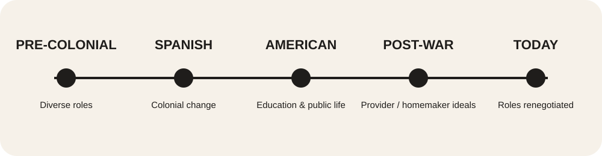
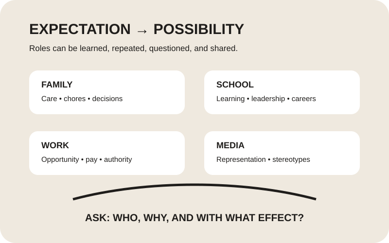

01
Women & Work
Women participate across education, employment, entrepreneurship, public life, and professional leadership. Their experiences are shaped by both opportunities and continuing expectations around care.
GENDER AND SOCIETY • MCO 1
Then • Now • Beyond
A critical exploration of how history, culture, family, institutions, media, and everyday expectations shape gender roles in Filipino society.
WHY IT MATTERS
Gender roles are social expectations about how people are supposed to behave, work, care for others, express themselves, and participate in society. In the Philippines, these expectations have been shaped by changing historical conditions and social institutions.
This website does not present one “Filipino” experience as universal. Experiences can differ across generations, regions, social classes, families, and individual circumstances.
THEN
Explore selected periods. These are broad historical snapshots, not descriptions of every Filipino community.

Roles were never identical across all communities. Look for differences in power, work, family life, education, and social institutions.
NOW
Traditional expectations can remain influential while people also negotiate new roles in everyday life.
Women participate across education, employment, entrepreneurship, public life, and professional leadership. Their experiences are shaped by both opportunities and continuing expectations around care.
Men are often expected to be providers and emotionally strong. Contemporary family life also includes fathers and male caregivers who share responsibilities traditionally coded as feminine.
Schools can reproduce expectations through everyday messages, but education can also challenge stereotypes by widening ideas about careers, leadership, and participation.
Household labor, caregiving, decision-making, and income are negotiated differently across Filipino families. There is no single family arrangement that represents everyone.
Gender can affect expectations about leadership, occupations, care work, and professional behavior. Looking at data helps move discussion beyond assumptions.
Media can repeat familiar stereotypes, but it can also give visibility to people who challenge traditional expectations and broaden public conversations.
LOOK AT THE EVIDENCE
Numbers do not explain every experience, but they help us ask better questions. The figures below come from official Philippine Statistics Authority releases.
household population recorded in the Philippines.
of the household population were male; 49.5% were female.
indicators were included in the PSA's 2024 Women and Men fact sheet across 20 socioeconomic sectors.
Breaking data down by sex can reveal patterns that a single total may hide. The PSA's Core Gender and Development indicators cover areas such as population, education, work and economic participation, social protection, and other gender concerns.
View PSA Gender Statistics ↗MULTIMEDIA
A short official Philippine Commission on Women video gives another way to understand why gender-responsive approaches matter beyond individual households.
Source: Philippine Commission on Women & Department of the Interior and Local Government, 2026.

Gender roles are learned through repeated messages and social practices. Critical reflection asks: Who is expected to do the work? Who gets opportunities? Who makes decisions? What happens when someone challenges the expectation?
Read PCW's Gender Mainstreaming overview ↗CRITICAL EXPLORATION
Common statements can sound ordinary because we hear them repeatedly. Repetition does not make a social expectation a universal rule.
THEN VS NOW
Use the button to move through examples of changing expectations. The comparison describes patterns, not every Filipino family or community.
VOICES
Instead of asking “What are Filipino men and women like?”, ask how social context shapes people’s options and responsibilities.
REFLECTION
Gender roles become easier to understand when we examine where expectations come from. Family practices, culture, institutions, media, economic conditions, and historical experiences can all influence what people are taught to expect from women and men.
Questioning a gender role does not mean rejecting every tradition. It means asking whether an expectation is fair, whether it limits people’s opportunities, and whether responsibilities can be shared according to people’s abilities and circumstances rather than stereotypes.
SOURCES & ACADEMIC INTEGRITY
Use the original sources below to verify claims and explore the topic further. External multimedia is credited beside the media item.
OUR GROUP
Our group members for the Gender Roles in the Philippine Context MCO.
Group Member
Group Member
Group Member
Group Member
Group Member
Group Member
Group Member
Group Member